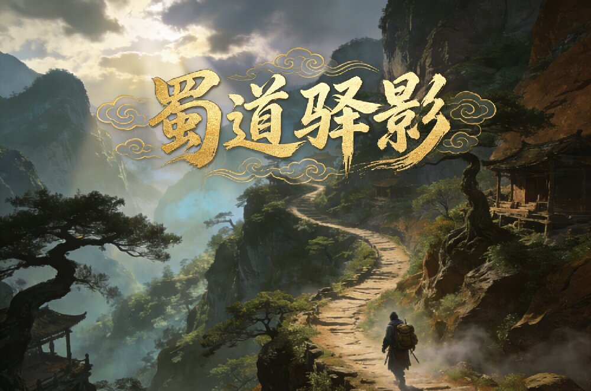
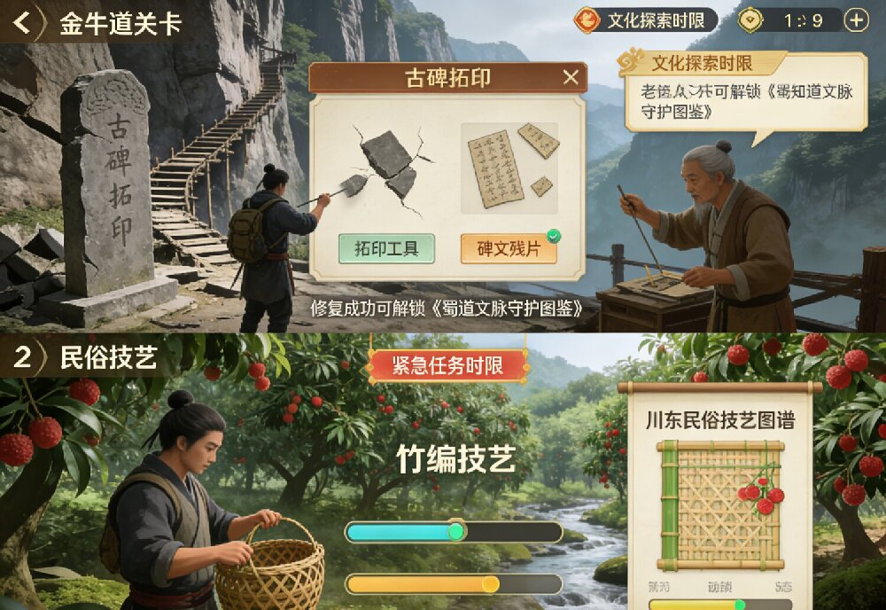
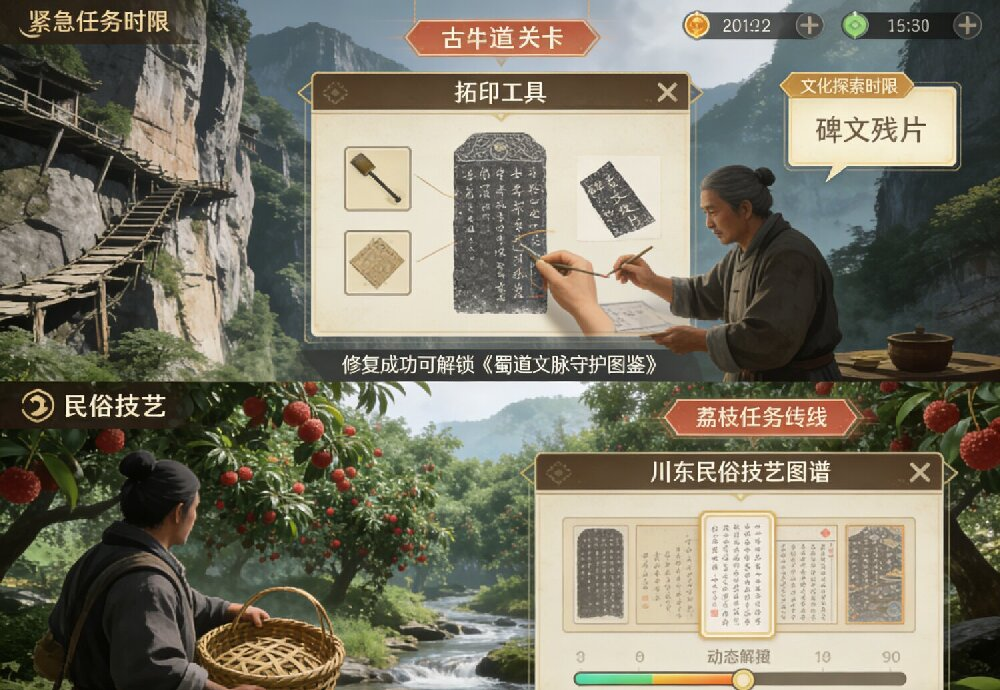
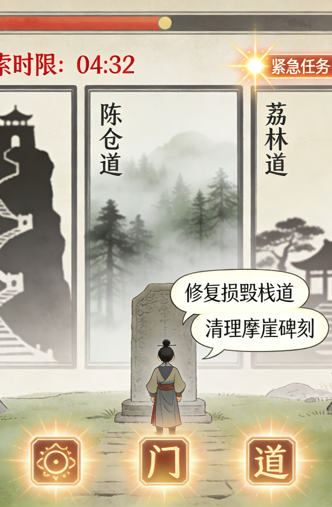
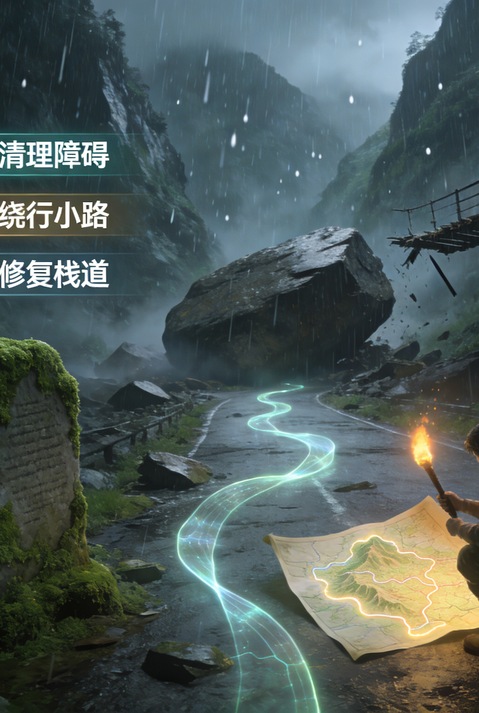
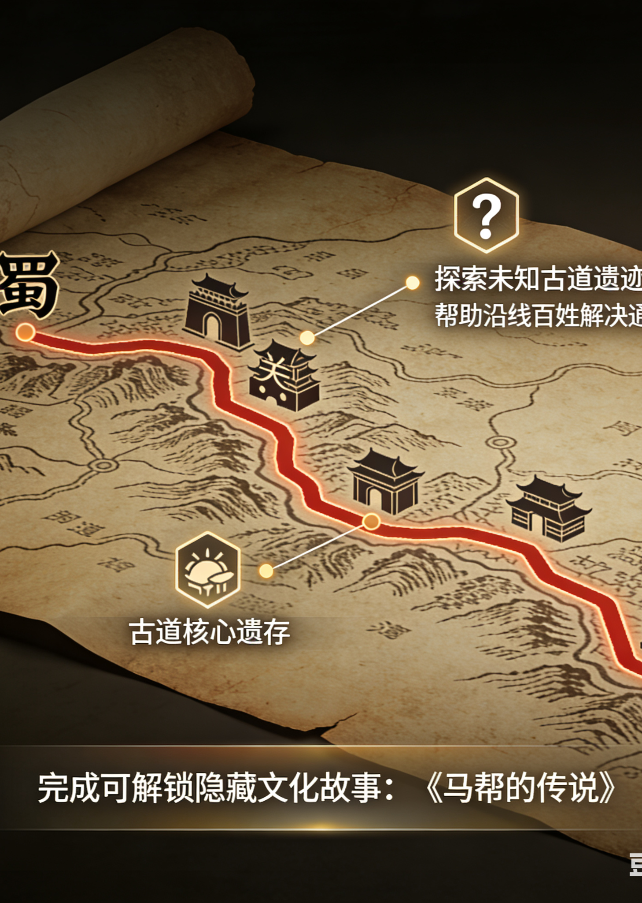
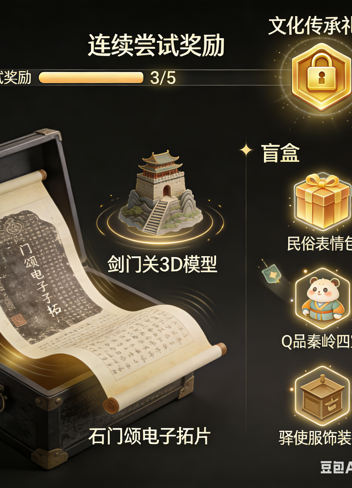
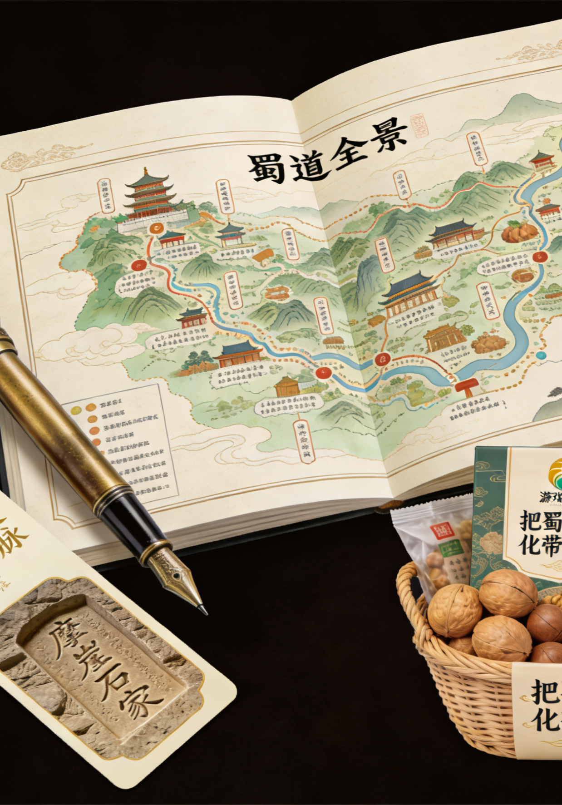

游戏关卡设计
关卡以金牛道、陈仓道、荔枝道三条古道的关键节点为核心，深度融合理史典以剑门关、白马关等为核心，设置栈道修复、古碑拓印等任务；陈仓道围绕宝鸡陈仓古城等节点，还原隧道开技并融入历史典故；荔枝道聚焦涪陵荔枝园等节点，设计物资保鲜、民俗文化互动等环节。
每个关卡设置"文化探索时限"与"紧急任务时限"双重时间机制，既保证玩家有充足时间了解文化内容，又通过紧急任务增加游戏紧张感与挑战性。

障碍应对
障碍设计贴合古道实际通行挑战与文化保护主题，分为自然障碍与人为障碍两类。自然障碍包含山洪、山体落石、浓雾等，人为障碍包含栈道损毁、碑刻模糊、物资短缺等。
玩家需通过三种方式解决问题：一是策略规划，如选择安全绕行路；二是技能操作，如修复栈道、清理碑刻；三是 NPC 艺。解决障碍的过程中，同步传递文化保护与应急避险的相关知识。

路线选择
游戏采用"主线＋支线"的开放路线模式。主线任务为编撰《蜀道文化图志》，核心目标是收集三条古道的核心文化遗存，是推进游戏剧情的关键脉络。支线任务根据玩家的路线选择触发，内容包括探索未知名古道遗迹、帮助沿线百姓解决通行难题、参与地方民俗活动等。
完成支线任务可解锁隐藏的文化故事（如蜀道古柏保护传说、文人行旅轶事）与专属奖励，强化游戏的探索性与文化深度。

奖励设计
奖励采用"固定＋随机＋保底"组合模式，全程承载文化传播功能。
固定奖励为通关核心关卡解锁的数字化文化藏品（如石门颂电子拓片、剑门关3D模型）及"文驿积分"，积分可兑换文化科普内容；随机奖励通过触发支线民俗表服装、定制壁纸等：累计一定尝试次数后，可解锁"文化传承礼包"，包含《蜀道文化图志》电子版、古道 VR 全景体验券等高价值数字化文创，保障文化获得感。

文创设计
以"文化传播＋实用价值＋区域赋能"为核心，设计系列文创产品，实现游戏文化价值的线下延伸。核心文创包括标注文化节点与典故、预留空间的道全景地图手账，以有摩崖石刻、唐诗名句、支持扫码听故事的"蜀道文脉"书签。
区域赋能文创方面，联动沿线景区开发可线下使用的数字化导览手册，为剑门豆腐、涪陵荔枝等农特产品设计"蜀道驿传"主题包装，提升文化附加值，助力区域发展。